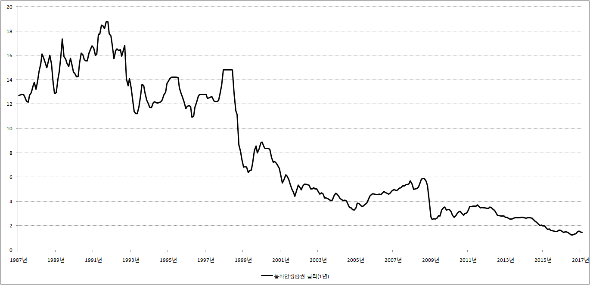

■ 통화안정증권이란?
통화안정증권의 정체를 알기위해서 우리는 먼저 ‘통화’와 ‘증권’이 무엇을 뜻하는지 살펴볼 필요가 있습니다.
1.통화의 뜻
통화는 ‘시중에 유통되고 있는 돈’을 줄인 말입니다. 만약 시중에 돌아다니는 돈이 과거에 비해 많아졌다면 통화량이 증가했다고 하고, 과거에 비해 줄어들었다면 통화량이 감소했다고 합니다.
2.증권의 뜻
증권은 ‘권리를 증명한 종이쪼가리’를 줄인 말입니다. 우리가 사랑하는 주식이 바로 대표적인 증권의 예입니다.
3.통화안증증권
통화와 증권의 뜻을 살펴봤으니 통화안정증권의 정체는 쉽게 알 수 있습니다. 통화안정증권은 ‘시중에 돌아다니는 돈의 양을 조절하기 위해 한국은행이 발행하는 아주 특별한 종이쪼가리’를 말합니다. 그런데 통화안정증권라고 또박또박 부르면 입이 제법 피곤합니다. 그래서 많은 사람들이 줄여서 ‘통안채’라고 부르고 있습니다. '통화량을 조절하기 위해서 발행하는 일종의 채권'이라는 뜻이죠.
통안채, 즉 통화안정증권은 구체적으로 어떻게 생겼을까요? 통안채라는 이름의 종이쪼가리에는 다음과 같은 내용이 적혀 있습니다.
‘100원만 투자하세요. 이자는 3개월에 한번 1원씩 드리고, 원금은 1년 뒤에 갚을 께요’
물론 그렇다고 진짜로 이렇게 적혀 있는 것은 아닙니다. 실물은 요기를 클릭해보시면 됩니다.
4.통화안정증권을 이용한 통화량 조절방법
통안채를 이용해 통화량, 즉 시중에 돌아다니는 돈의 양을 조절하는 방법은 간단합니다.
예를 들어 지금 현재 시중에 돈이 너무 많아서 물가가 상승할 것 같다고 합시다. 그러면 한국은행은 시중의 일반은행에 전화를 합니다.
‘내가 통안채라는 걸 만들었거든~ 이거 사라! 그러면 내가 이자 팍팍주께’
이렇게 한국은행이 전화를 넣으면 여윳돈이 있는 시중의 일반은행은 통안채에 투자를 합니다. 그리고 일반은행이 통안채를 구입하면 그만큼의 돈이 일반은행 금고에서 빠져나와 한국은행 금고로 들어가게 됩니다. 따라서 일반은행의 금고가 비게 되고, 그만큼 시중에 돌아다니는 돈의 양이 줄어들게 됩니다.
시중에 돈이 너무 없어서 걱정이라면 반대로 하면 됩니다. 팔았던 통화안정증권을 다시 사들이면 됩니다. 그러면 그만큼의 돈이 한국은행 금고에서 일반은행 금고로 흘러들어가게 됩니다. 따라서 일반은행의 금고가 꽉꽉 차게 되고, 이 돈을 대출해주면 시중에 돌아다니는 돈의 양이 그만큼 늘어나게 됩니다.
5.통화안정증권 금리 조회 사이트
통안채 금리는 한국은행 경제통계시스템에서 아래의 순서대로 하나하나 클릭하시면 됩니다.
▶ 한국은행 경제통계시스템 → 4. 금리 → 4.1 시장금리 → 4.1.1 시장금리
{kind=link}